Argosy — User Guide (end-to-end)
How you actually use the whole system — not just one tab. Live screenshots, traced flows, and the holes I found while writing this.
1. What Argosy is
Argosy is two things glued together:
- An always-on Python orchestrator that watches your portfolio and the market continuously, with cadences running at minute / hour / daily / weekly / monthly / annual rhythms.
- A Next.js dashboard at
localhost:1337where you read state, approve proposals, and negotiate with the agent fleet.
The engine convenes a fleet of AI specialists (analysts, debate, risk officers, fund manager) to debate any non-trivial move. Each rationale is persisted, so months later you can ask why something happened and get a real answer.
The user-visible surface is split into 14 tabs, but the working flow only routes through 5-6 of them regularly. The rest are inspection / debugging tools.
2. The 14 tabs at a glance
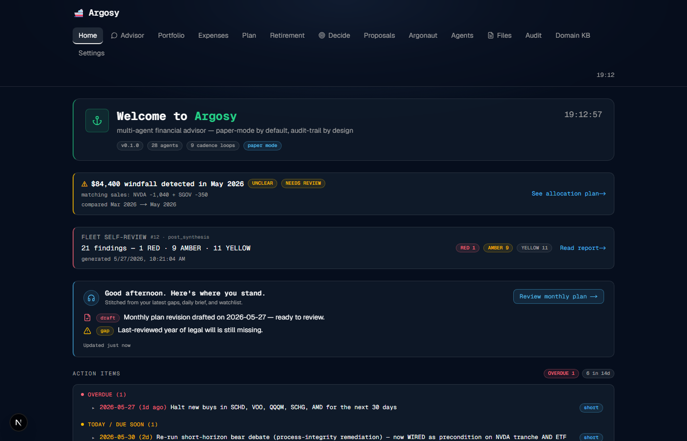
| Tab | Job in your flow | How often |
|---|---|---|
| Read where you stand · catch fired triggers | Daily | |
| The data-entry portal. Chat + attach files + gap-tracker rows on the right. | Daily-to-weekly | |
| Current FIRE position + financial-independence chart | Weekly | |
| Spending dashboard with sub-tabs (Overview/Monthly/Transactions/Sources/Merchants/Trips/RSU/Income) | Weekly + monthly drill | |
| Current draft plan from the agent fleet. Per-objection AGREE/DISAGREE/DEFER. | When synthesis lands | |
| Long-term truth-teller — fat-tail-aware P(ruin) verdict + safety gates | Monthly + on-trigger | |
| Open ticker-decision flows | When the system surfaces one | |
| Queue of trade proposals awaiting approval | Daily | |
| $1K bounded auto-trading account | Monthly check-in | |
| Agent fleet activity log | Debugging | |
| Audit-traceable catalog of every uploaded file. Read-only. | Reference | |
| Full decision audit log | Rare provenance research | |
| Israel-resident knowledge base | Reference | |
| Per-feature config | Setup only |
3. How data gets in — the single mechanism
catalog_upload, SDD §17.1). One shortcut: ships a dedicated drag-drop tile for batch bank-statement ingest (same backend path, more convenient when you have 6 PDFs in a row). remains read-only — it's a catalog viewer, not an upload portal. Windfalls don't use any of these: they're auto-detected by diffing your monthly TSV (see §5).
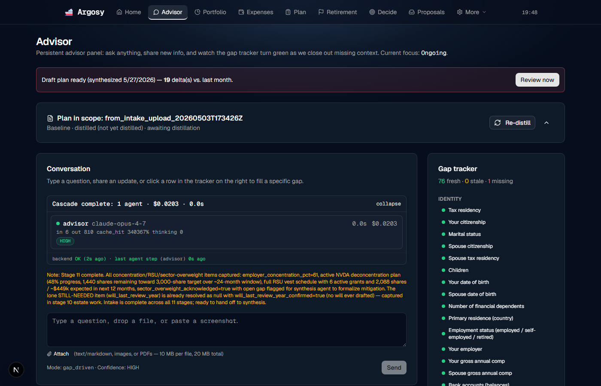
Two ways to give Argosy new information from this surface:
- Free-form text in the chat. "I just got a 50K USD bonus paid today" or "We're expecting our second kid in November" or "I'm switching from Migdal to Clal." The Advisor extracts structured fields and updates the relevant gaps + propagates to the projections.
- Attach a file. Click the Attach pill (text/markdown, images, or PDFs — 10 MB per file, 20 MB total). Drop a Leumi statement PDF, a Discount Mastercard statement, a Schwab CSV, a screenshot of your payslip. The ingestion pipeline parses it server-side; the catalog row appears in ; the relevant dashboard surface (e.g. ) refreshes once parsing completes.
What's IN the gap tracker
The right-side panel groups ~75 required fields under 11 stages (Identity · Goals · Financial picture · Broker connections · Plan · Ops prefs · Estate · Insurance · Tax · Education · Special situations). Each row is colored:
- fresh — value is recent enough for the field's freshness policy (e.g. portfolio_value monthly, identity annually)
- stale — past freshness window; should be refreshed
- missing — never filled
Currently: 76 fresh · 0 stale · 1 missing. The 1 missing is the "Last-reviewed year of legal will" gap surfaced on the Home page.
4. End-to-end flow: First-time setup
<UploadStatementsCard> at the top of — faster for batches, multi-file drag-drop, per-file results render inline; (b) Attach one at a time on chat — better when you want to narrate context. Either way, the expense pipeline parses each statement and rows populate on .5. End-to-end flow: Windfall (auto-detected — no buttons, no typing)
update_leumi_tsv.py + monthly drops into $ARGOSY_EXPENSE_SAMPLES_ROOT), and Argosy diffs consecutive snapshots to detect windfalls automatically. No buttons to find. No forms to fill.
Family Finances Status - YY MMM.tsv in your Portfolio/Resources folder$ARGOSY_EXPENSE_SAMPLES_ROOT (default D:/Google Drive/Family/Finances/Portfolio/Resources). You don't open the UI yet.argosy/services/retirement/windfall_detector.py diffs the two most-recent TSVs. Fires when the cash delta crosses $25K USD or ₪75K NIS. The classifier then matches equity sales within the same month to the cash delta (5% tolerance) and tags the source as , , or .unclear (needs your input), neutral when Argosy resolved it.WindfallCard sits at the top of the page: hero verdict + the current vs plan target allocation table (one row per asset class in your TSV — typically 7-9) + three horizon columns (long / medium / short) with proposed instruments and dollar amounts.action_engine (so an accepted proposal becomes a PrioritizedAction with a due date) is the next chunk of work. The card and the banner are read-only this round.unclear (most-likely cause: a chunk of proceeds was redeployed inside the same month, so equity-sales total doesn't match cash delta within 5%), the banner currently just links to the retirement card. The plan calls for a deep-link into /advisor?focus=windfall_<id> that opens the chat with the event context pre-rendered and uses intake_extractor to classify your reply. That part hasn't shipped yet — see the resume note at docs/superpowers/plans/2026-05-28-windfall-flow-resume.md.
RuinProbabilityHero at the top of doesn't show "Last re-computed at 14:32 (triggered by: windfall_detect)". Without that stamp the user can't tell whether the verdict reflects the new cash or the snapshot before it.Suggested fix: stamp the hero with last-compute timestamp + trigger cause.
6. End-to-end flow: Monthly bank statement update
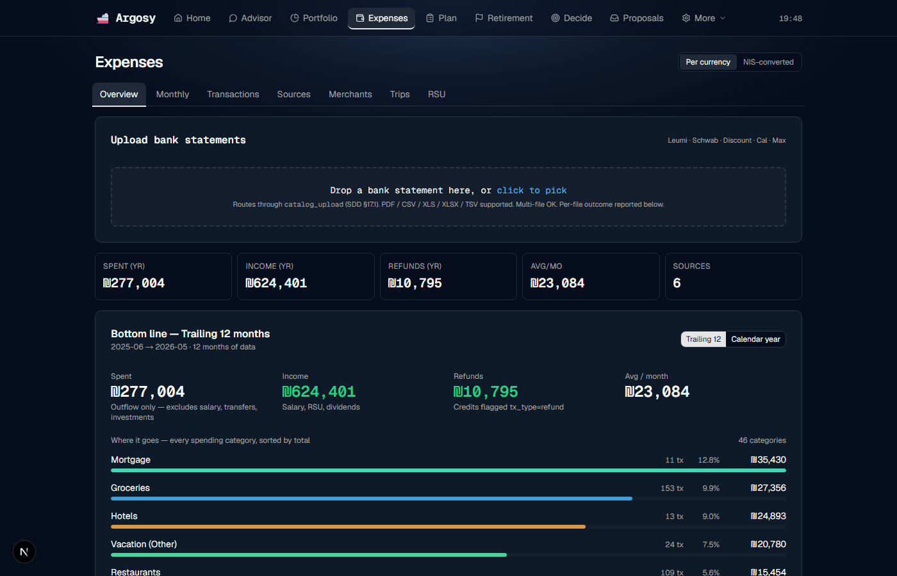
<UploadStatementsCard> at the top of takes multi-file drag-drop. Drop one or more statements directly on the tile or click to pick. PDF / CSV / XLS / XLSX / TSV all accepted. (The chat Attach button still works too if you prefer it — same backend path through catalog_upload.)household_categorizer agent show up without a page reload.Suggested fix: per-source "Last statement: May 2026 (5 days ago)" indicator in the Sources sub-tab.
<UploadStatementsCard> on the bank-statement flow is covered, but uploads of non-statement documents (a payslip, a tax letter, anything destined for the catalog rather than a parser) still have to go through the chat Attach button. still reads as "where I upload files" but is "where I see what I uploaded."Suggested fix: add a general Upload button on that uses the same
catalog_upload backend.
7. End-to-end flow: Credit card categorization
Argosy auto-categorizes each transaction via the household_categorizer agent (Opus-backed by default, per the accuracy-over-cost binding preference). Most rows are right out of the box; some need manual correction:
category_overrides and the agent learns from this for future similar merchants.8. End-to-end flow: Plan → Retirement loop
You're right that the natural order is Plan first, then Retirement. They answer different questions:
| Page | Answers | Timescale |
|---|---|---|
| "What should I DO this month/quarter?" | Tactical · short + medium horizon | |
| "Can I retire? When? At what risk?" | Strategic · 30+ year horizon |
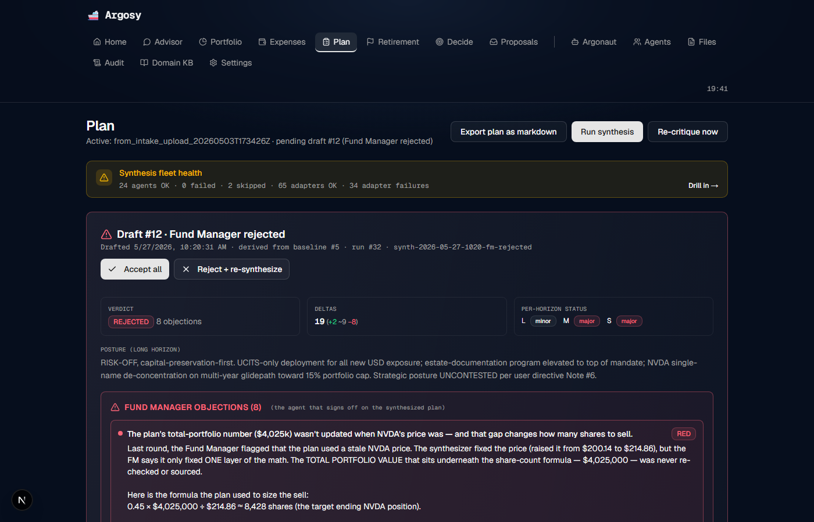
user_directive. Takes ~70 min for the full Opus stack.9. Home in detail
What each block does:
- Anchor banner — version + agent count + cadence count + mode badges. Mode is paper / live / queue_only.
- Fleet self-review — automatic post-synthesis audit of the agent fleet's own output (10 deterministic detectors). Link goes to .
- Daily-brief card — stitched from the day's gap deltas + investor-event signal + watchlist anomalies. "Review monthly plan" CTA → .
- Action items widget — pulled from the active plan's short + medium horizon. Bucketed OVERDUE / TODAY / DUE_SOON / UPCOMING.
- Synthesis history (below the fold) — accordion of every prior agent-fleet run with cost + agent count + timestamp.
10. Advisor in detail
Layout:
- Top banner — "Draft plan ready · 19 delta(s) vs. last month" + Review now CTA.
- Plan in scope bar — which intake-upload doc is being used as the baseline + a Re-distill button.
- Conversation panel — Cascade footer ("0 agents · $0.0000 · 0.0s") shows multi-agent cost of your last turn. Type a question, drop a file, paste a screenshot.
- Attach pill — text/markdown, images, or PDFs. 10MB/file, 20MB/turn.
- Gap tracker — 76 fresh / 0 stale / 1 missing. Rows grouped by stage. Click any row → chat focuses there.
11. Portfolio in detail
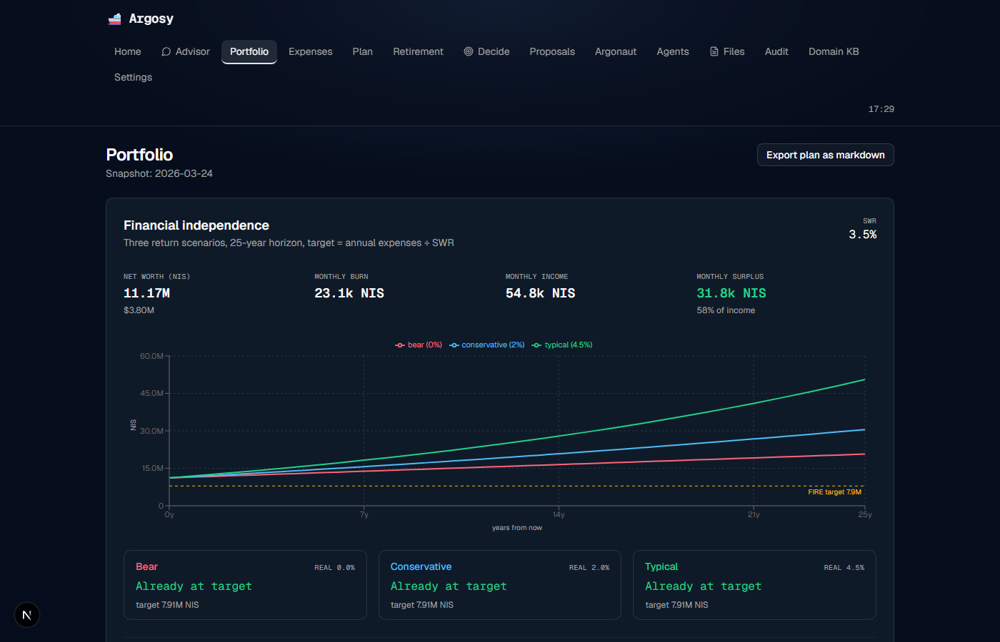
This is the FIRE-position view. Different from :
| This page | Question answered | Engine |
|---|---|---|
| Am I at FIRE today, under simple 25-yr SWR math? | Deterministic — 3 scenarios (bear 0%, conservative 2%, typical 4.5% real return) · SWR 3.5% | |
| Will I stay solvent through 95 under fat-tail / FX / Israeli-tax / regime-switch risk? | Stochastic — regime-switch MC + bootstrap CI + age-aware tax + stochastic FX |
Both can coexist. /portfolio says "Already at target" under all three scenarios. /retirement says "OFF TRACK at 57% P(solvent at 95)". Both are right at their own level of conservativeness — the Portfolio chart shows the optimistic-deterministic story, Retirement shows the conservative-stochastic truth.
12. Expenses in detail
Sub-tabs:
- Overview — what's shown above. Trailing 12 vs Calendar year toggle. Per-currency vs NIS-converted toggle.
- Monthly — month-by-month bar chart + per-month drill. Where you spot anomalies.
- Transactions — flat row-level view. Search + filter. Inline category-edit.
- Sources — per-issuer health (Leumi-NIS · Leumi-USD · Discount · Cal · Schwab). Currently 6 sources.
- Merchants — merchant-level rollup. Bulk relabel from here.
- Trips — auto-detected travel periods (hotel + restaurant + transport cluster).
- RSU — Schwab disbursements vs Leumi USD wire credits cross-validation.
- Income — per-month income breakdown (salary + dividends + bonus + side-income + RSU rollup), with month-shift navigation. The asymmetry with the expense side that a previous round of this guide flagged is closed:
ui/src/app/expenses/income/page.tsx.
13. Plan in detail
The page lifecycle:
- Monthly cycle fires (1st of month) — 5-phase synthesis: 10 analysts → 2 debate teams → synthesizer → 3 risk officers → fund manager. ~30-70 min depending on stack.
- FM verdict lands — either ACCEPTED or REJECTED with N objections.
- Page renders the draft — rejection summary + per-objection details, severity-color-coded.
- Per-objection toggle — AGREE · DISAGREE · DEFER. DISAGREE opens a counter-position textarea. "Discuss with [analyst]" launches an FM↔analyst dialogue.
- "Start new round with my decisions" — re-runs synthesis with your toggle decisions as
user_directive. Loop continues until FM accepts or you accept anyway.
14. Retirement in detail

18 cards in 12 named sections. The left sidebar TOC (UX #6 fixed) lets you jump between them.
| Section | What's there |
|---|---|
| Windfall | WindfallCard — only renders when the detector found a qualifying cash delta in the latest TSV. Hero + allocation delta table + 3-horizon proposals + matching-sales drilldown. |
| Verdict | RuinProbabilityHero (the OFF_TRACK card above) |
| Safety | SafetyGatesPanel — NRA estate · Emergency liquidity · Conflict scenario |
| Predictions | Sigma calibration · Withdrawal policy selector (with the new UX #4 caveat) · Stochastic FX |
| Decision policy | Glide path · Rebalancing alerts |
| Expenses | Phase expenses · Healthcare cost curve |
| Tax | Tax calculator · Hishtalmut timer |
| Decumulation | Decumulation order · Lump-vs-annuity (with the new Bug #2 rationale) |
| Balance | Real estate + mortgage |
| Risk transfer | Insurance gaps (4 types) |
| Israeli | Bituach Leumi stipend · Mekadem variance band |
| Sources | Methodology + 19-entry sources panel |
15. Files in detail
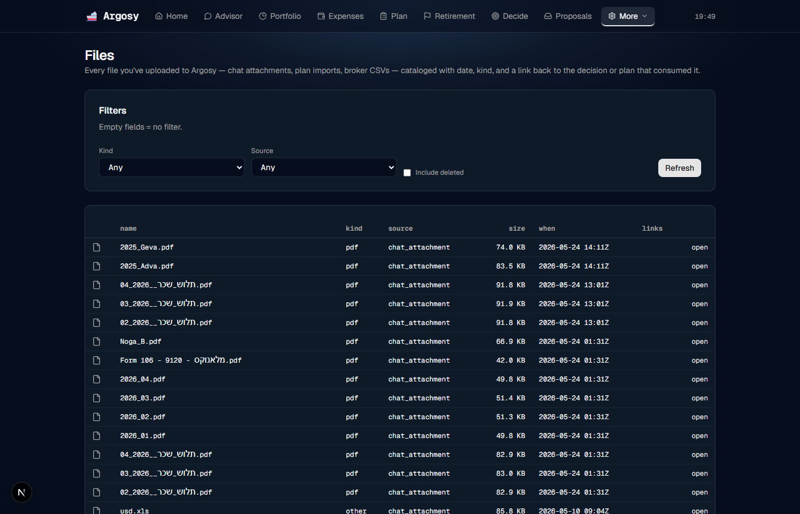
Filters: Kind · Source · Include deleted toggle.
Each row shows: filename · Kind (pdf / image / ...) · Source bucket (chat_attachment most common) · Size · When · Open link.
16. · ·
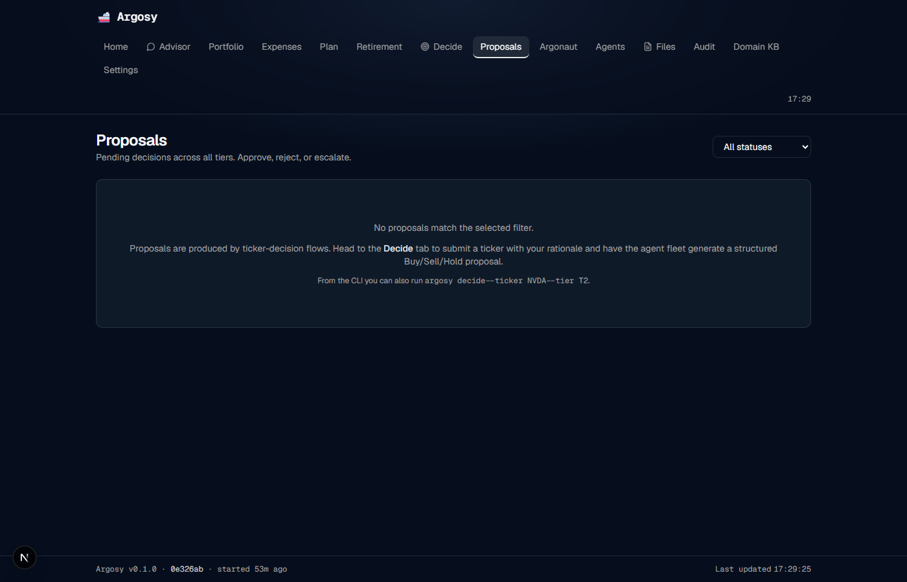
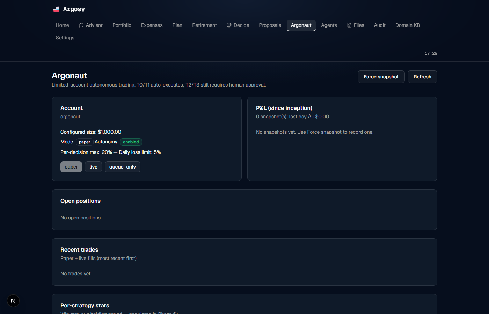
The trade-decision flow:
- Submit a ticker via — enter symbol + rationale → agent fleet generates Buy/Sell/Hold proposal.
- Proposal lands in .
- Approve / Reject / Escalate. For T0/T1 in Argonaut on live mode, the engine auto-executes.
- Filled orders surface in (Recent trades) and .
GET /api/plan/current/structured?user_id=ariel — endpoint doesn't exist. The Argonaut page tries to fetch the structured plan but the backend doesn't expose this shape. Doesn't break the page (graceful fallback to "no positions") but it's a real network-log bug.Suggested fix: add the endpoint OR remove the fetch from the Argonaut page.
17. · · ·
Inspection / config tabs. Brief overview:
- /agents — agent fleet activity log. Filter by role + time range. Use when debugging "why did the FM reject?"
- /audit — flat audit_log table. Every decision, every event, queryable. Use for "what did Argosy do last Tuesday at 09:00?"
- /domain-kb — Israel-resident knowledge base (tax brackets, UCITS rules, BL rates). Read-only reference.
- /settings — per-feature config. Mostly leave alone after first setup.
18. Detail pages reached by click-through
These surfaces aren't in the top nav — you land on them by clicking a link from Home, /portfolio, /plan, /retirement, or one of the banners. They're documented here so the next time a banner says "Read report →" or a synthesis row says "Drill in →" you know what you're getting.
— Synthesis replay (primary debug surface)
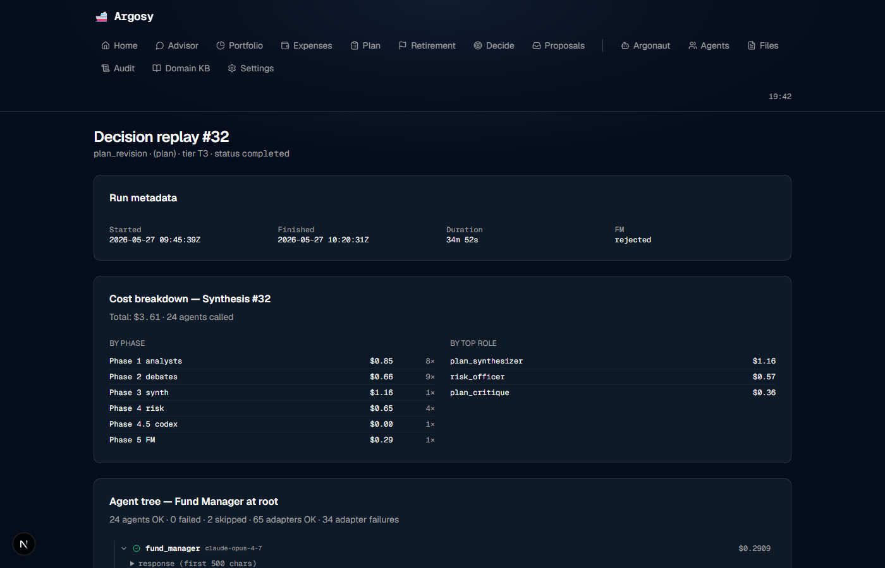
The deepest view in the app. Lands here from the Home page's DecisionAccordion "Drill in →" links and from the in-flight-synthesis banner. One page per decision_runs.id.
Top: a VerdictCard showing the FM's final verdict (APPROVE / APPROVE_WITH_CONDITIONS / REJECT) + the decision_kind (plan_revision, trade_proposal, delta_pushback, daily_brief) + duration in human terms (e.g. "38 min" — and yes, the page corrects for the SQLite-naive-timestamp UTC-offset bug so the duration is accurate regardless of your local timezone).
Middle: the FM-rooted Agent Tree. Every agent that ran is a node; parent→child edges reflect orchestration (FM at root, sub-agents below). Each node renders agent role + status (ok / degraded / failed / skipped) + confidence + a one-line excerpt. Click to drill into the full prompt/response/citations for that one run. The codex_second_opinion node is special: it carries structured cross-engine findings (BLOCKER / AMBER / YELLOW) that are surfaced inline instead of buried in the transcript.
Bottom: Cost breakdown. Total $-spend for the run, split two ways — by phase (Phase 1 analysts / Phase 2 debates / Phase 3 synth / Phase 4 risk / Phase 4.5 codex / Phase 5 FM) and by top role. Useful when a synthesis runs hot and you want to know where the budget went. Below: a Mermaid sequence diagram of the whole flow if you want the alternative view.
— Self-review trends (the list view)
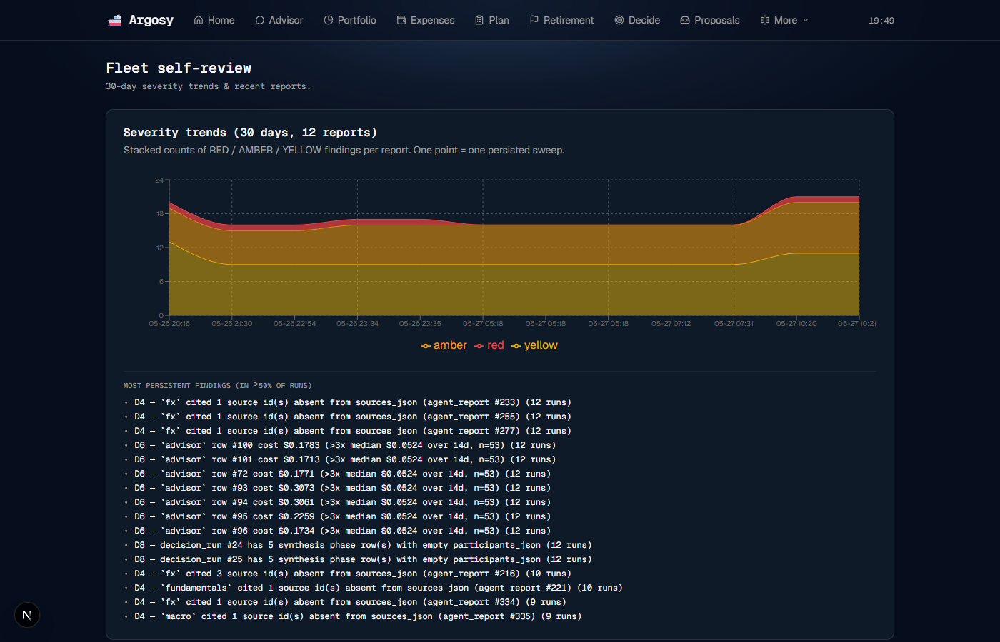
The Home banner links to a specific report at . The list-index at (no id) shows the 30-day trend across all reports — useful for "is the AMBER count going up over time?" without having to open each report.
Top: a stacked-area chart over the last 30 days. RED layered on top of AMBER on top of YELLOW so a single RED spike doesn't get hidden inside a tall YELLOW band. X-axis is "MM-DD HH:mm" (post-synthesis reports cluster around plan revisions, so time-of-day matters).
Below the chart: persistent findings — the specific detectors that keep tripping across recent runs, named explicitly so the fix priority is obvious without opening each report.
Bottom: the most-recent 50 reports as clickable rows, each linking to its viewer.
— Full anomaly viewer
The Home banner surfaces the first RED anomaly from the most-recent report; is where the rest live. Lands here from the banner's "view details →" link.
Each report row shows: severity pill (RED / AMBER / YELLOW), the watchlist entry name (e.g. "card-2923-fee-waiver"), the observation in plain English, suggested action, "last seen" timestamp, and the agent's confidence.
Below the anomaly list: a watchlist-status snapshot — per-entry state (NORMAL / ALERT / RESOLVED / UNKNOWN) so you can see what the agent was monitoring at the moment this report fired.
— Per-holding thesis cards
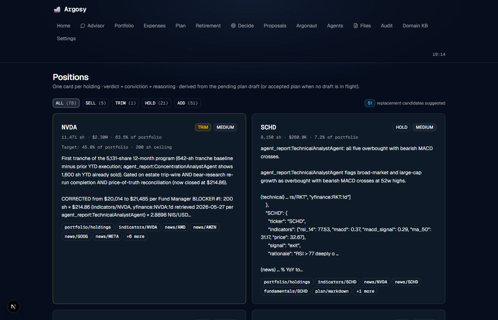
One card per holding: ticker · current shares · current weight % · USD value. Each card carries the agent fleet's verdict (HOLD / BUY / TRIM / SELL / ADD) + conviction (HIGH / MEDIUM / LOW) + a paragraph of reasoning + cited sources. Pulled from the pending plan draft (or the accepted plan when no draft is in flight).
Same component is also rendered inside — is the permalink so older bookmarks keep working. Easier to land on directly if all you want is "what does the fleet think about NVDA right now?"
+ — First-login + legacy redirect
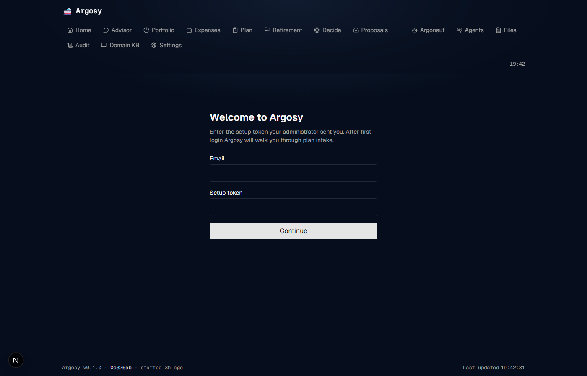
is the new-tenant landing page. Takes an email + a setup token (from the admin or the invite URL's ?token= param), signs the user in via NextAuth, and drops them on the home page where the Advisor's gap-tracker takes over (see §4). Off-nav by design — you'd only land here on first-login of a fresh tenant.
is a thin redirect to . The old 6-stage interview was replaced by the persistent advisor relationship (gap-tracker sidebar + free-form Q&A) in the Phase 1 reframe; this stub stays so older bookmarks land on the right surface.
19. Fixes shipped this round
The "rounds" stack: each round delivers a chunk of work, this section documents what landed and what closed. Most-recent rounds first.
This session — coverage push + windfall flow + IA reconciliation
/advisor?focus=income_event deep-link. The actually-shipped fix takes the opposite philosophy: there's no button, by design. Backend detector + plan-aware allocator + GET /api/retirement/windfall/detect shipped in 6c5247e; the <WindfallBanner> on Home + <WindfallCard> on shipped in 0851abb. See §5 for the end-to-end walkthrough.
ui/src/app/expenses/income/page.tsx exists and serves a real per-month income breakdown (fetches expensesApi.incomeBreakdown(user_id, month) with month-shift navigation, error + loading states). Accessible from . The §2 tab-at-a-glance table and the §12 sub-tab list have been updated to reflect the live state.
POST /api/expenses/upload had no UI consumer despite shipping a complete multi-file ingest backend (canonical catalog_upload per SDD §17.1). The <UploadStatementsCard> on (commit shipped this session) closes it: drag-drop, multi-file, per-file PARSED/FAILED outcomes, auto-detected Max card-last-4 prompt. §6 "Monthly bank statement" flow rewritten to lead with the new tile.
GET /api/retirement/hishtalmut/withdrawal-tax orphaned — sibling to the /eligibility call that the HishtalmutTimerCard already consumed. The card now includes a "what if I withdraw ₪X?" input that drives a debounced fetch and renders the tax owed alongside the eligibility countdown. Closes the pair.
/decisions/<id>, /fleet-review, /anomalies/<id>, /positions, /onboarding); §21 audit re-shot to capture all 19 routes (was 14). 6 ZigZag-converged blockers applied across the windfall UI + guide. SDD handover note updated to reflect the windfall UI as shipped.
Previous round — retirement-companion overhaul (2026-05-28 morning)
Bug #1 — Sigma calibration result fed into the verdict FIXED
Route accepts sigma_annual query param. api.retirement.ruinProbability opts include sigmaAnnual. RuinProbabilityHero accepts sigmaAnnual prop. page.tsx fetches sigma calibration once on mount and threads the value to the hero. Net effect: changes to your portfolio composition now actually change the verdict number.
Bug #2 — Lump-vs-annuity redundant "split" text FIXED
Was rendering the recommendation enum ("split") as the card description. Now renders the explanatory sentence: "Annuity alone doesn't cover essential expenses but lump alone is risky. 50/50 hybrid hedges both ways: annuity provides a guaranteed floor; lump provides upside + flexibility."
UX #3 — "Coming up" card deleted FIXED
All 7 waves shipped. Stale card removed from page.tsx.
UX #4 — VPW/Bucket policy caveat FIXED
When VPW or Bucket is selected, an amber caveat appears below the radio list explaining that those policies eliminate literal zero-balance ruin but don't guarantee covering essential expenses. Users no longer think the selector is broken when the verdict stays OFF_TRACK.
UX #5 — Hero loading indicator FIXED
Separate loading state; prior data stays visible while re-fetching; small re-running… pulse badge appears next to the verdict label during the 1-2s MC re-run.
UX #6 — Page TOC sidebar FIXED
17 cards reorganized into 11 named sections with anchor IDs. Sticky left-side TOC visible on large viewports. Hidden on mobile to preserve vertical space.
20. Holes still in the flow (not yet fixed)
These are real gaps that the per-tab walkthroughs surfaced. None block usage; all worsen UX. Numbering reflects the post-windfall state — the old Hole #1 ("Add income event isn't discoverable") was closed by the windfall auto-detect flow, see §19.
RuinProbabilityHero.Suggested fix: stamp the hero with last-compute timestamp + trigger cause.
WindfallCard on renders Accept/Defer buttons on every proposal (long / medium / short horizons), but they're disabled with a tooltip. Wiring through the existing action_engine (so an accepted proposal becomes a PrioritizedAction with severity HIGH and a due date, surfaced in the home-page action-items widget) is the next chunk.Suggested fix: add
POST /api/retirement/windfall/accept + /defer endpoints + persistence; light up the buttons.
unclear, the banner currently just deep-links to . The resume note (docs/superpowers/plans/2026-05-28-windfall-flow-resume.md) sketches a focus-mode dialogue on that opens with the event context as the first message and extracts the user's clarification (bonus, gift, in-month redeployment) into structured state. Concrete details — extractor agent, persistence schema, advisor route shape — are TBD and will be locked when that chunk is built.Suggested fix: design + ship the focus-mode flow per the resume note.
Suggested fix: per-source freshness badge in the Sources sub-tab.
Suggested fix: add an Upload button on /files that calls the same
catalog_upload backend the Advisor chat uses, OR rename the tab to "Catalog."
Suggested fix: per-file parse-status column on /files with a "Re-try" button.
Suggested fix: ⌘K / Ctrl-K palette searching audit_log + transactions + plans.
21. System health (live audit, 2026-05-28)
| Page | Loaded | Console errors | Failed requests |
|---|---|---|---|
| / | ✓ | 0 | 0 |
| /advisor | ✓ | 0 | 0 |
| /portfolio | ✓ | 0 | 0 |
| /expenses | ✓ | 0 | 0 |
| /plan | ✓ | 0 | 0 |
| /retirement | ✓ | 0 | 0 |
| /decide | ✓ | 0 | 0 |
| /proposals | ✓ | 0 | 0 |
| /argonaut | ✓ | 1 (the 404 above) | 0 |
| /agents | ✓ | 0 | 0 |
| /files | ✓ | 0 | 0 |
| /audit | ✓ | 0 | 0 |
| /domain-kb | ✓ | 0 | 0 |
| /settings | ✓ | 0 | 0 |
| /positions | ✓ | 0 | 0 |
| /decisions/32 | ✓ | 0 | 0 |
| /fleet-review | ✓ | 0 | 0 |
| /fleet-review/12 | ✓ | 0 | 0 |
| /onboarding | ✓ | 0 | 0 |
19/19 routes render (14 nav tabs + 5 detail surfaces from §18). 1 page has 1 console error (the /argonaut 404). Backend at :8000 with 29 retirement endpoints registered (including /windfall/detect). UI at :1337 via Next.js 16.
0851abb) and the post-ZigZag corrections landed (commit 96524ed). The screenshot shows the live <WindfallBanner> reading "$84,400 windfall detected in May 2026 — NEEDS REVIEW"; the screenshot shows the <WindfallCard> at the top with the DESTINATION-labelled allocation table.
Generated 2026-05-28. Live screenshots via Playwright + Chromium 1.59.0 at viewport 1400×900, re-shot 17:29 to include the windfall surfaces.
Capture scripts: argosy/services/.progress/user_guide/.
Per-page audit: docs/user-guide/full_site_audit.json.